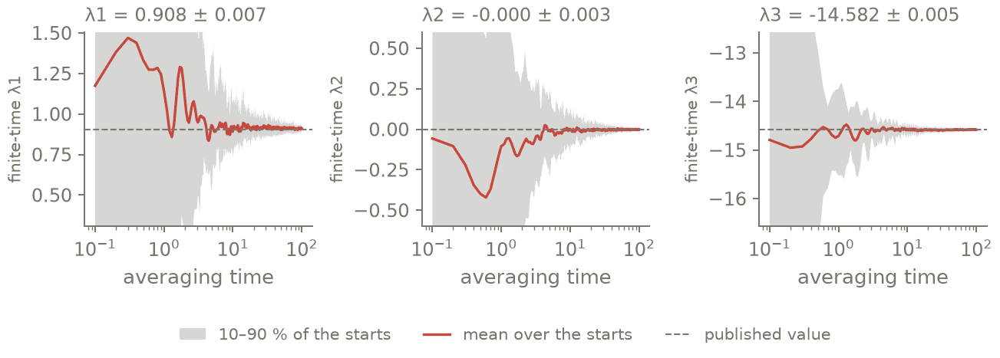
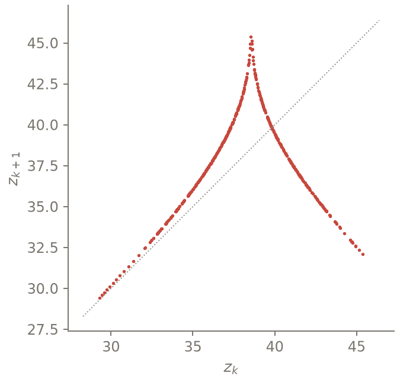
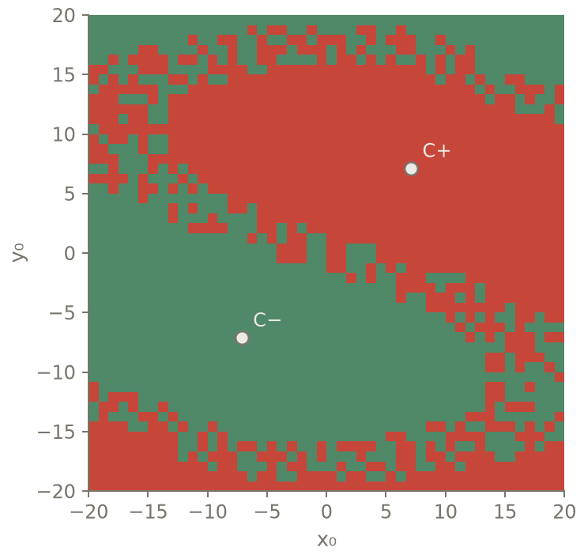

Chaos and ensembles: the Lyapunov spectrum of Lorenz¶
Goal. Compute the Lyapunov spectrum and the Kaplan–Yorke dimension of the Lorenz attractor,
with error estimates, from 32 trajectories advanced in one batch.
Expected. Sprott (web page lorenzle.htm): \((0.906, 0, -14.572)\), \(D_{KY} = 2.062\); exact sum
\(-(\sigma + 1 + b) = -13.667\) for the flow (constant divergence).
Extensions. Three later sections reuse the same batch; each can be read alone. The covariant
vectors (for the flow, the neutral one is the flow direction \(f(x)\); the RK443 map approaches it
as \(dt \to 0\)). The Lorenz map from a Poincaré section: maxima of \(z\) on a one-dimensional cusp
map (Lorenz 1963, Fig. 4). The basins of the two stable foci at \(r = 20\), from 2304 members
advanced together.
Time: about 1 min on one CPU core.
Script: t12_chaos_ensembles.py · Tests behind it:
tests/chaos/, tests/ensembles/.
The tangent used here is the derivative of the discrete step, so the spectrum is that of the map actually computed. Many trajectories share one batch, so the error estimates (independent trajectories, block errors) cost little more than one trajectory.
Write the system¶
import numpy as np
import conatus as cn
from conatus.chaos import lyapunov_spectrum, poincare_section
from conatus.ensembles import Ensemble, ensemble_fate
from conatus.expert import IVPSolver, ode_problem
SIGMA, B = 10.0, 8 / 3
def lorenz(r, dt):
pb = ode_problem(["x", "y", "z"], {"sigma": SIGMA, "r": r, "b": B},
lambda X, P: [P["sigma"] * (X["y"] - X["x"]),
P["r"] * X["x"] - X["y"] - X["x"] * X["z"],
X["x"] * X["y"] - P["b"] * X["z"]], name="Lorenz")
return IVPSolver(cn.discretize(pb), "RK443", dt) # scheme and dt: explicit choices
s = lorenz(28.0, 0.01)
An ODE has no geometry, so the Lorenz system is written with ode_problem from the expert layer:
the same kind of problem object a native model compiles to, advanced by the same IVPSolver. The
scheme and the time step are arguments of the call.
Lyapunov spectrum from 32 trajectories¶
rng = np.random.default_rng(0)
X0 = np.column_stack([rng.uniform(-10, 10, 32), rng.uniform(-10, 10, 32), rng.uniform(10, 40, 32)])
res = lyapunov_spectrum(s, X0, n_vectors=3, transient_steps=1000, tangent_transient_steps=1000,
steps=10000, reortho_every=10, inner="euclidean", n_blocks=5, seed=1,
clv_window=50, clv_backward_transient=150, clv_keep_every=10)
print(res.explain())
You supply the durations, in simulation time units or steps: the trajectory transient, the
tangent transient (the vectors align with the Oseledets directions before anything is averaged)
and the averaging steps. The QR interval, the number of blocks for the error, the inner product and
the seed are arguments too. explain() prints each exponent with the standard error of the
block means and the lag-1 correlation of those blocks (if it is large the blocks are too short).
The sum is not exactly \(-13.667\): it is the mean \(\log|\det J|\) of the RK443 map, whose
truncation at \(dt = 0.01\) is \(7.7\times10^{-3}\) (\(9.2\times10^{-4}\) at \(dt/2\): third order).


Finite-time estimates of the three exponents, averaged from the start of the measurement, over the 32 starts of the page: the band holds the middle 80 % of the starts, the red line is their mean and the dashed lines are the published values 0.906, 0 and −14.572. The panel titles give the final mean and its standard error over the starts. Time is in the units of the Lorenz equations.¶
Extension: covariant vectors¶
x, y, z = (res.clv_states[..., i] for i in range(3))
f = np.stack([SIGMA * (y - x), 28.0 * x - y - x * z, x * y - B * z], axis=-1) # vector field
g = res.clv[:, :, 1, :] # neutral CLV
cos_fg = np.abs((f * g).sum(-1)) / (np.linalg.norm(f, axis=-1) * np.linalg.norm(g, axis=-1))
print(f"neutral CLV vs f(x): min |cos| = {cos_fg.min():.8f} over {cos_fg.size} samples")
Ginelli’s backward pass turns the stored \(Q\) and \(R\) factors into the covariant vectors. For the continuous flow, the zero exponent belongs to time translation and its covariant vector is parallel to \(f(x)\). The time-stepping map satisfies this only up to its time-discretisation error. For example, one explicit Euler step on \(x' = x^2\) gives \(D\Phi_h(x)\,f(x) - f(\Phi_h(x)) = -h^2 x^4\). The check below therefore measures the angle with \(f(x)\) against a tolerance.
Extension: Poincaré section and the Lorenz map¶
zmax = poincare_section(s, X0[:8], lambda X: X[:, 0] * X[:, 1] - B * X[:, 2], # dz/dt = 0
direction=-1, steps=5000, g_tol=1e-10, max_iterations=30)
zk, zk1 = zmax.return_pairs(lambda p: p[2])
print(zmax.explain())
print(f"Lorenz map: {zk.size} pairs (z_k, z_k+1), z in [{zk.min():.2f}, {zk.max():.2f}]")
The section \(g = xy - bz = 0\) (a maximum of \(z\)) is located on the scheme: a sub-step \(\tau^*\) of the same Runge–Kutta method with \(g(\Phi_{\tau^*}(X_n)) = 0\) to the declared tolerance. No interpolant is assumed; a crossing that is not located is refused.


The Poincaré section dz/dt = 0 of the page: each maximum of z against the next falls on a one-dimensional cusp map, as in Lorenz’s Fig. 4 of 1963.¶
Extension: basins of attraction from one ensemble¶
s20 = lorenz(20.0, 0.01)
c = np.sqrt(B * 19.0)
Cp, Cm = np.array([c, c, 19.0]), np.array([-c, -c, 19.0])
half = np.linspace(20 / 48, 20, 24)
grid = np.concatenate([-half[::-1], half]) # exactly symmetric (linspace(-20, 20) is not)
GX, GY = np.meshgrid(grid, grid)
starts = np.column_stack([GX.ravel(), GY.ravel(), np.full(GX.size, 19.0)])
ens = Ensemble(s20, len(starts), rhs="batched") # 2304 members in one batch
ens.set_states(starts)
def attractor(e):
X = e.states()
near_p, near_m = np.linalg.norm(X - Cp, axis=1) < 1.0, np.linalg.norm(X - Cm, axis=1) < 1.0
return np.where(near_p, 1, np.where(near_m, -1, 0))
fate = ensemble_fate(ens, attractor, check_every=100, min_steps=100, max_steps=10000,
classifier="|X - C+-| < 1")
basin = fate.labels.reshape(GX.shape)
print(fate.explain())
print(ens.explain())
ensemble_fate asks the classifier every check_every steps and latches each member’s verdict.
Members undecided at the final time keep classification 0, and the result counts them.


Basins of C+ (red) and C− (blue) at r = 20 for the 2304 starts of the ensemble (z₀ = 19); the rare starts still undecided at the horizon are black. The map is symmetric under (x, y) → (−x, −y).¶
Check against the references¶
Exponents within four standard errors (plus the RK443 truncation) of \((0.906, 0, -14.572)\), \(D_{KY}\) of \(2.062\), sum \(-13.667\) to \(10^{-2}\); neutral covariant vector parallel to \(f\) to \(10^{-6}\); basins exchanged exactly by \((x, y) \to (-x, -y)\).
lam, err = res.exponents, res.stderr
D, dD = res.kaplan_yorke()
assert abs(lam.sum() + (SIGMA + 1 + B)) < 1e-2 # RK443 truncation ~7e-3 at dt = 0.01
assert abs(lam[0] - 0.906) < 4 * err[0] + 0.01 and abs(lam[1]) < 4 * err[1] + 0.01
assert abs(lam[2] + 14.572) < 4 * err[2] + 0.02 and abs(D - 2.062) < 4 * dD + 0.01
assert cos_fg.min() > 1 - 1e-6
assert zk.size > 100 and 25 < zk.min() and zk.max() < 50
# r = 20: no chaotic attractor, but a start near the stable manifold of the origin can stay in
# transient chaos beyond the horizon: reported as undecided (0), never assigned
assert (fate.labels == 0).sum() <= 0.005 * fate.labels.size
assert np.array_equal(basin, -basin[::-1, ::-1]) # (x, y) -> (-x, -y) swaps C+ and C-
print(f"CHECK lambda = ({lam[0]:.4f} +- {err[0]:.4f}, {lam[1]:.4f} +- {err[1]:.4f}, "
f"{lam[2]:.4f} +- {err[2]:.4f}), sum = {lam.sum():.5f} (-13.66667), D_KY = {D:.4f} +- {dD:.4f}; "
f"basins: {int((basin == 1).sum())} / {int((basin == -1).sum())} members, "
f"{int((basin == 0).sum())} undecided")
Output (as executed)¶
# t12_chaos_ensembles: PASS (exit 0) in 136.6 s | 2026-10-21 | script sha256 26241358f979bb75
Lyapunov spectrum of the discrete map (RK443, dt = 0.01, backend = cpu): 3 vector(s), 32 trajectory(ies)
transient 1000 steps, tangent transient 1000 steps, average over T = 100 per trajectory (1000 QR every 10 steps = 0.1)
inner product: Euclidean on the coefficient vector; projection: none; seed 1
error: standard error of 160 block means (5 per trajectory), max |lag-1 corr| = 0.43
λ1 = +0.90848 ± 0.00681 (CLV growth +0.95967)
λ2 = -0.00041 ± 0.00332 (CLV growth +0.04043)
λ3 = -14.58248 ± 0.00477 (CLV growth -14.64957)
sum = -13.67441
Kaplan–Yorke dimension = 2.0623 ± 0.0003
covariant vectors (Ginelli et al. 2007): 5 kept time(s) x 32 trajectory(ies), window 50 interval(s) after a backward transient of 150, kept every 10
memory: all 200 stored intervals kept in memory (Q_j, X_j, R_j+1): 1.03 MiB
backward convergence (sine of the angle between the CLVs of two independent random backward starts): max 3.45e-05 (worst vector 2); slow for nearly equal exponents (rate λ_i-1 - λ_i): lengthen clv_backward if it matters
subspace convergence per split j (span(γ_j+1..γ_k), two starts, largest sine; rate λ_j - λ_j+1): 3.5e-05, 7.2e-16
covariance residual (sine of the angle between J γ_i(t_j) and γ_i(t_j+1) over one interval; consistency of the stored factors with the tangent): max 5.00e-15 (vector 3); largest ratio to its rounding floor eps exp((λ_1 - λ_i) Δt): 4.78 (vector 3)
smallest principal angle between span(γ_1..γ_j) and the rest, j = 1..2: 0.0372, 0.267 rad
neutral CLV vs f(x): min |cos| = 0.99999985 over 160 samples
Poincaré section (g decreasing through 0), 8 member(s), 530 crossing(s) over 5000 steps of RK443 dt = 0.01
location: τ* in (0, dt] with g(Φ_τ*(X_n)) = 0 on the scheme (Illinois regula falsi), |g| <= 1e-10, max 30 iterations; observed max |g| 8.2e-11, mean iterations 4.9
Lorenz map: 522 pairs (z_k, z_k+1), z in [29.29, 45.38]
EnsembleFate: 2304 member(s); checks every 100 steps (dt = 0.01), no verdict before step 100, horizon 10000 steps; classifier: |X - C+-| < 1
outcomes {-1: 1152, 1: 1152} (0 = undecided at the final time)
Ensemble(2304 member(s), 1 parameter set(s), scheme=RK443, dt=0.01, backend=cpu)
step: IVPSolver arithmetic on (B, n) arrays (same stages, same order)
BatchedRHS(polynomial form, CPU/NumPy): 7 term(s), 0 with per-member coefficients; transforms, derivatives and products vectorized over a leading member axis (same operations as the fused/linearized forms; equal to IVPSolver.F to rounding, not bit for bit)
BatchedSystem: 2304 member(s), n = 3, M and L shared by all members (one sparse product over the batch); CPU stacked bordered-banded solves, one call per bucket for the whole batch; factors of each member stacked (members with the same L share the same matrices, replicated in the stack: memory B x one factorization); 1 (a, b) pair(s) factored
CHECK lambda = (0.9085 +- 0.0068, -0.0004 +- 0.0033, -14.5825 +- 0.0048), sum = -13.67441 (-13.66667), D_KY = 2.0623 +- 0.0003; basins: 1152 / 1152 members, 0 undecided